State Innovation Gating (SIG)
Anchor the recurrent state to its geometric initialization to regulate drift over extended sequences.以几何初始化为锚点，约束长序列中的循环状态漂移。
Robust Online 3D Reconstruction
with Bayesian Adaptive State Updates
Feed-forward transformer models have driven remarkable progress in 3D vision, yet their quadratic complexity renders them impractical for long video sequences. Streaming 3D reconstruction addresses this bottleneck by processing frames sequentially with constant memory. However, existing recurrent architectures inevitably suffer from progressive degradation over long sequences, as they fail to account for the intrinsic reliability of observations and the accumulated confidence of the historical state, leading to severe error accumulation. To address these issues, we introduce BAT3R, a training-free Bayesian adaptation framework comprising two synergistic modules: State Innovation Gating (SIG) and Bayesian-guided Adaptive State Updating (BASU). SIG acts as a distributional regularizer that anchors state evolution to its geometric initialization, effectively arresting representational drift during long-term inference. Building on this, BASU reformulates state update as a recursive Bayesian inference process within a Kalman filtering framework. By jointly modeling the temporal reliability of observations via information-theoretic gain and spatial relevance via cross-attention maps, BASU achieves an asymmetric spatio-temporal state fusion: well-consolidated historical regions are protected from redundant updates, while genuinely novel scene content is aggressively incorporated. Extensive experiments on standard benchmarks (7-Scenes, TUM, ScanNet, KITTI, etc.) demonstrate that BAT3R consistently outperforms state-of-the-art online 3D reconstruction methods, with the most significant gains observed on long sequences and complex scenes.前馈 Transformer 模型推动了三维视觉的显著进展，但其二次复杂度使其难以应用于长视频序列。流式三维重建通过以恒定内存逐帧处理来解决这一瓶颈。然而，现有循环架构未能考虑观测本身的可靠性与历史状态累积的置信度，导致严重的误差累积，因此不可避免地在长序列中出现性能逐步退化。为解决这些问题，我们提出 BAT3R，一种无需训练的贝叶斯自适应框架，由两个协同模块组成：状态创新门控（SIG）和贝叶斯引导的自适应状态更新（BASU）。SIG 作为分布正则化器，将状态演化锚定于其几何初始化，从而有效抑制长期推理中的表征漂移。在此基础上，BASU 在卡尔曼滤波框架内，将状态更新重新表述为递归贝叶斯推断过程。通过利用信息论增益建模观测的时间可靠性，并通过交叉注意力图建模空间相关性，BASU 实现了非对称的时空状态融合：保护已充分巩固的历史区域，使其免受冗余更新，同时积极融合真正新增的场景内容。在标准基准（7-Scenes、TUM、ScanNet、KITTI 等）上的大量实验表明，BAT3R 持续优于最先进的在线三维重建方法，其中在长序列和复杂场景上的提升最为显著。
Rotate and zoom to compare BAT3R, CUT3R, and ground-truth geometry.旋转、缩放，对比 BAT3R、CUT3R 与真值几何。
These saved server exports have not been verified as the paper-selected best run.交互点云来自已有服务器导出，尚未核实为论文采用的最优实验批次。
Loading real scene data…
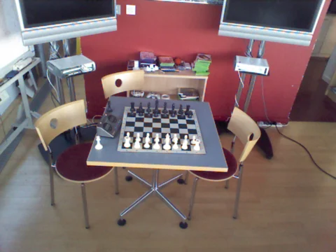
Nearest displayed RGB keyframe最近的输入 RGB 关键帧
FOLLOW THE INPUT CAMERA查看输入相机运动
The highlighted camera follows the saved ground-truth input poses. Geometry is the complete saved reconstruction, rather than simulated progressive inference.高亮相机沿保存的输入真值位姿移动。点云展示完整的保存结果。
These are preserved scale/shift-aligned benchmark exports. Each cloud is uniformly sampled to at most 70,000 finite points for browser performance, retaining its original RGB; the web viewer applies no additional ICP or method-specific alignment. The camera path is ground truth, not an estimated trajectory. CUT3R denotes the reference update path in the same evaluation implementation. No reconstruction inference was rerun for this website. Quantitative results follow the paper tables.展示内容来自保存的尺度/平移对齐基准结果。每个点云均匀采样至最多 70,000 个有限点并保留原始 RGB；网页不再做 ICP 或针对方法的额外对齐。相机轨迹是真值轨迹。CUT3R 表示同一评估实现中的参考更新路径。本站没有重新运行重建推理；定量结果遵循论文表格。
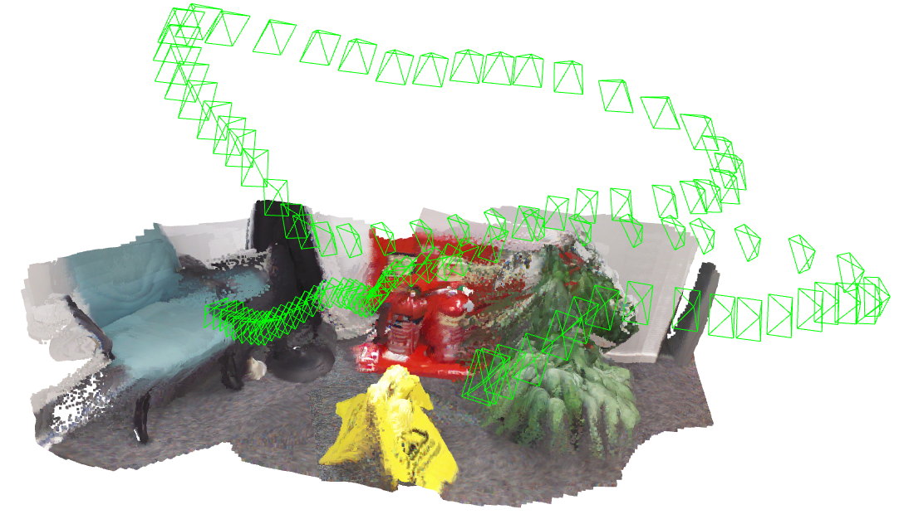
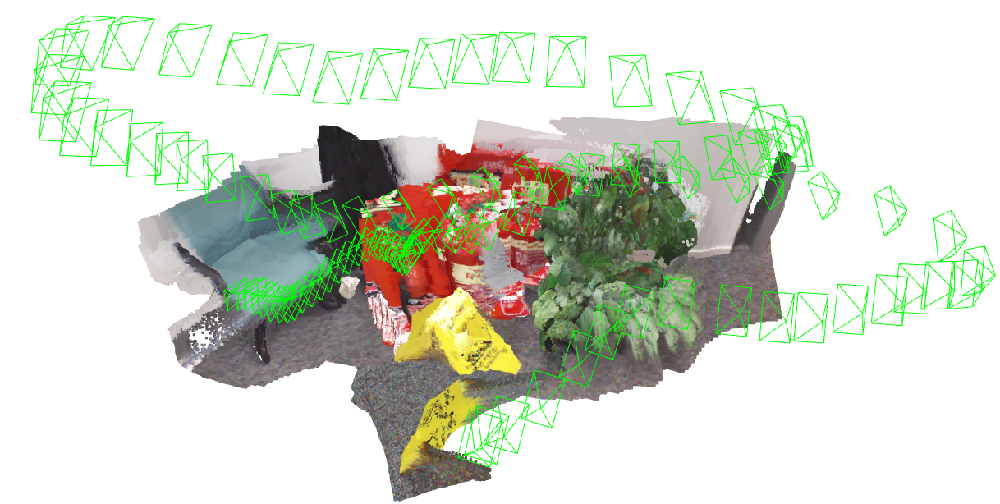
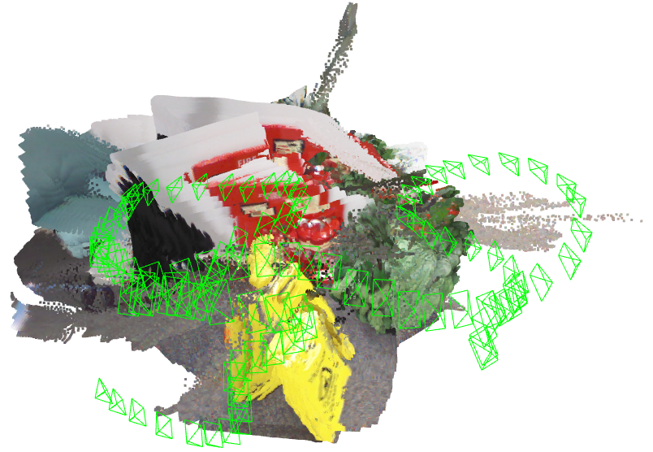
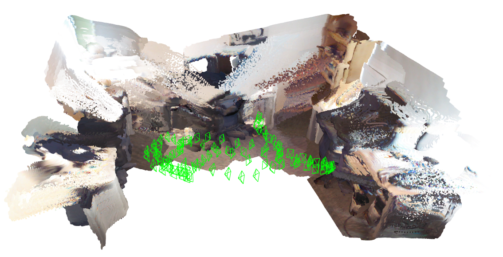
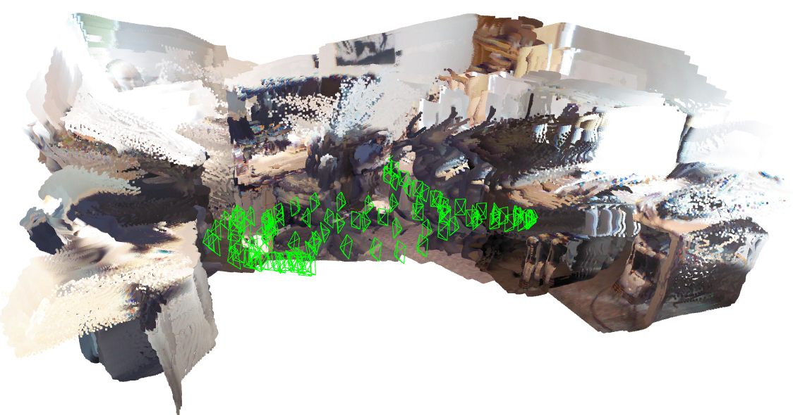
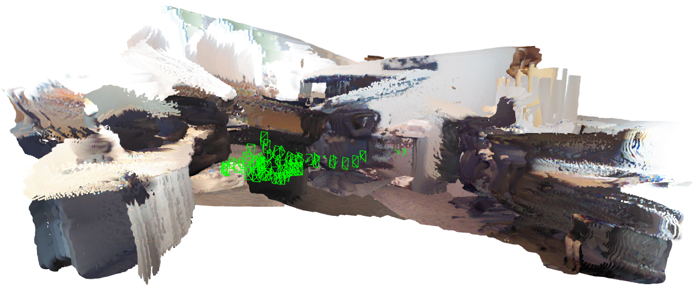
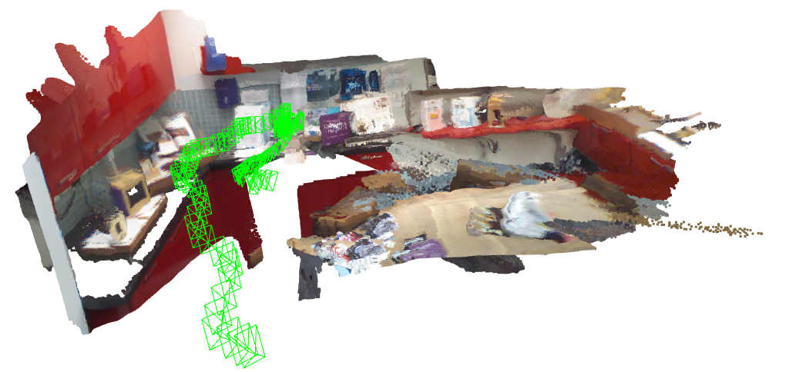
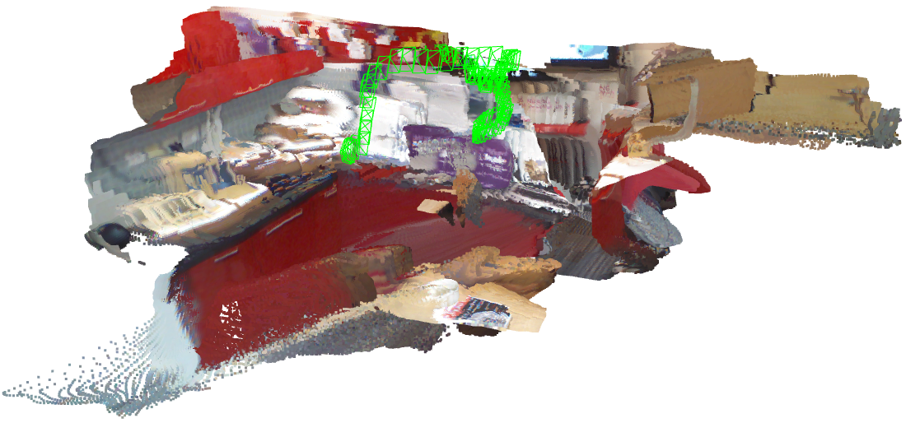
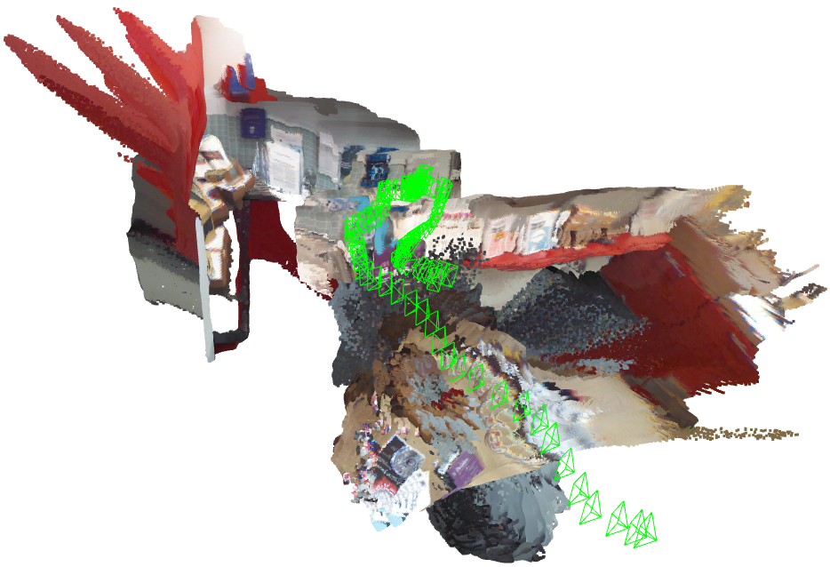
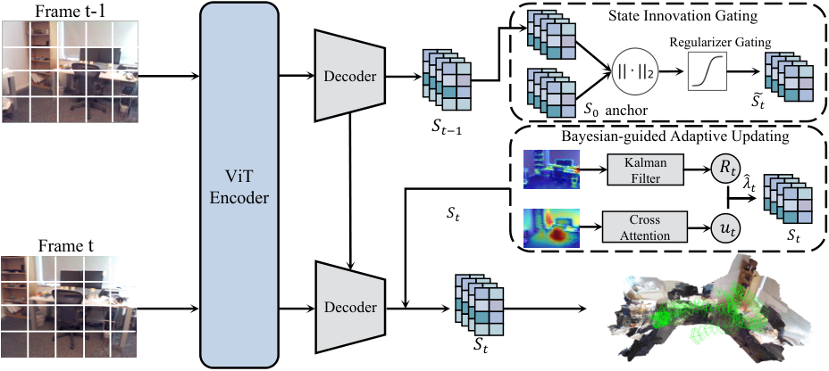
Anchor the recurrent state to its geometric initialization to regulate drift over extended sequences.以几何初始化为锚点，约束长序列中的循环状态漂移。
Combine historical state uncertainty, observation confidence, and spatial relevance for selective state updates.结合历史状态不确定性、观测置信度和空间相关性，选择性地更新场景状态。
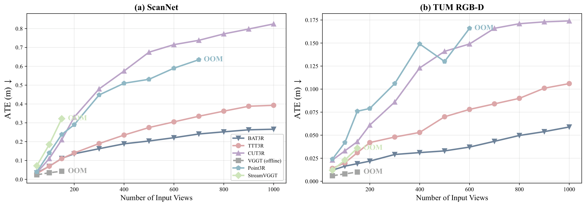
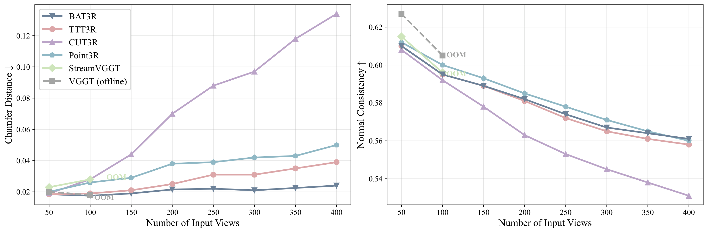
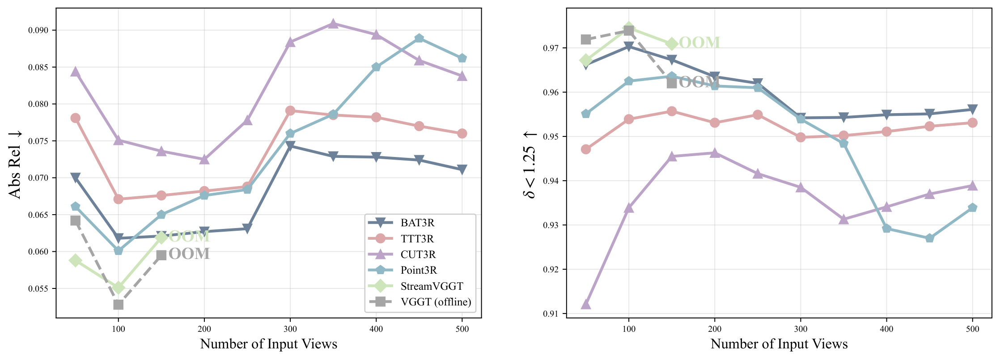
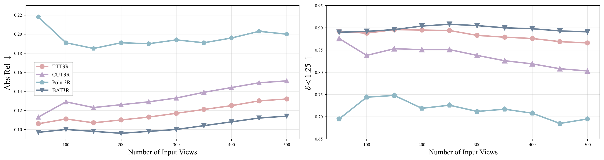
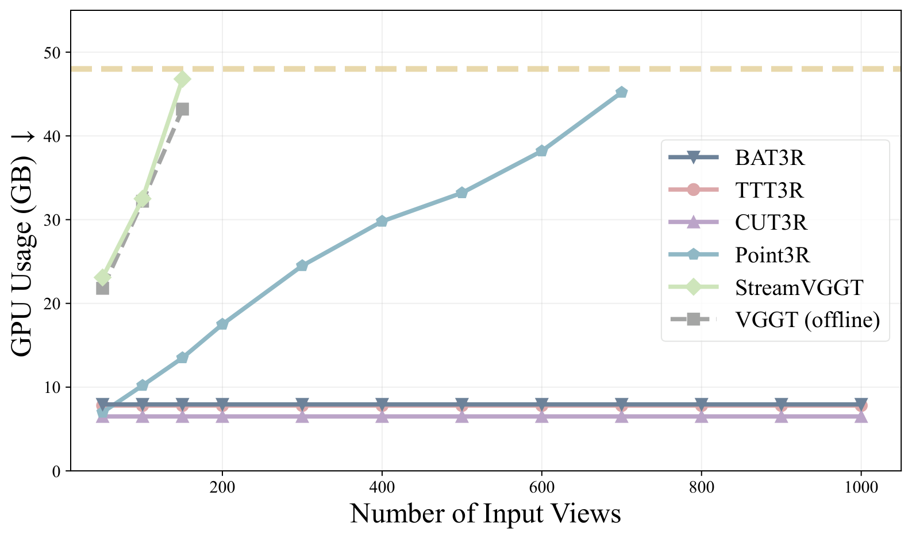
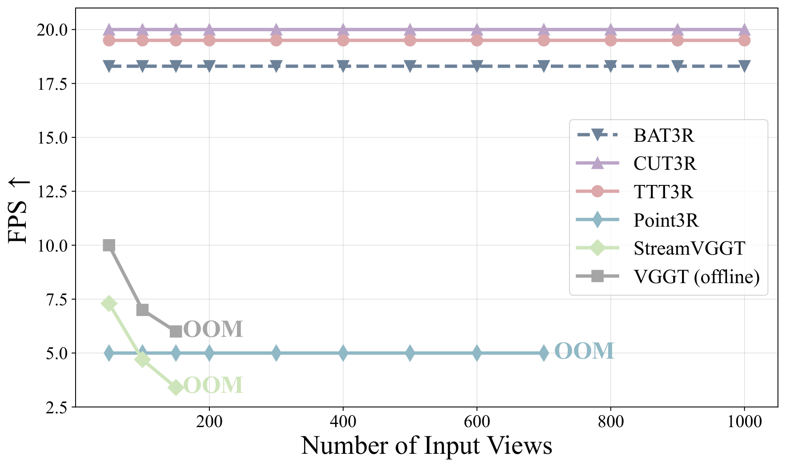
Paper Tables 1–4 · Acc. and Comp. are geometric errors (lower is better).论文表 1–4 · Acc. 与 Comp. 为几何误差，越低越好。
| Method方法 | Value数值 | Mode模式 |
|---|
Table 4 reports mean / median Acc., Comp., and normal consistency at 300, 400, and 500 frames. Table 2 reports short-sequence ATE and RPE; Table 3 separates per-sequence scale and metric scale depth. Table 1 is component ablation with its own frame counts. No unreported sequence counts or extra precision are inferred. Long-sequence and efficiency plots are reproduced directly from the paper.表 4 报告 300、400、500 帧下 Acc.、Comp. 与法向一致性的均值和中位数。表 2 为短序列 ATE/RPE；表 3 区分序列尺度对齐与绝对尺度深度；表 1 为消融实验，使用各自的帧数设置。没有推断未报告的序列数量，也没有添加小数精度。长序列与效率图直接采用论文原图。 OpenReview ↗
@inproceedings{li2026bat3r,
title={BAT3R: Robust Online 3D Reconstruction with Bayesian Adaptive State Updates},
author={Li, Lijian and He, Yuanpeng and Zheng, Yudian and Huang, Chung-ju and
Li, Linyu and Jin, Dongming and Jiao, Wenpin and Jin, Zhi and Pun, Chi-Man},
booktitle={Advances in Neural Information Processing Systems},
year={2026},
url={https://openreview.net/forum?id=MP758ZsHYv}
}